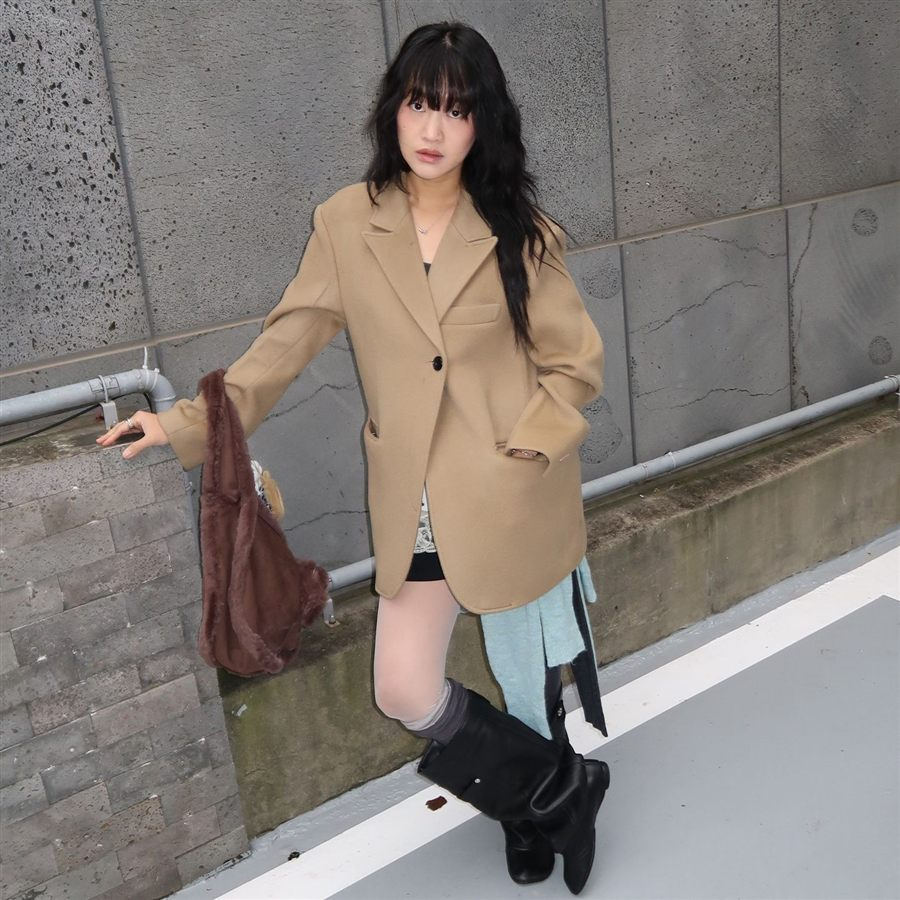
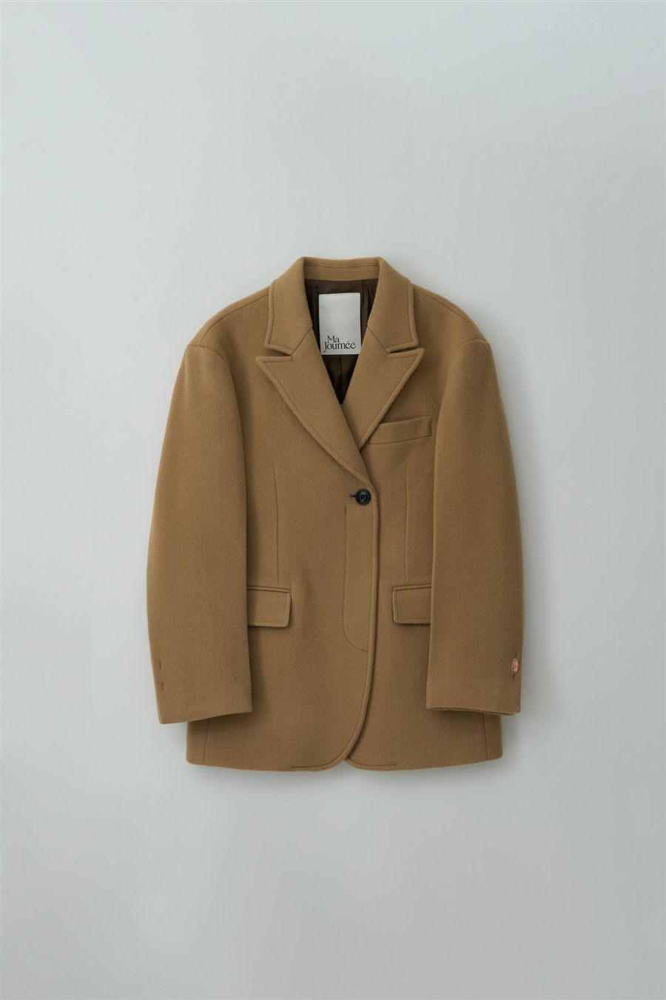
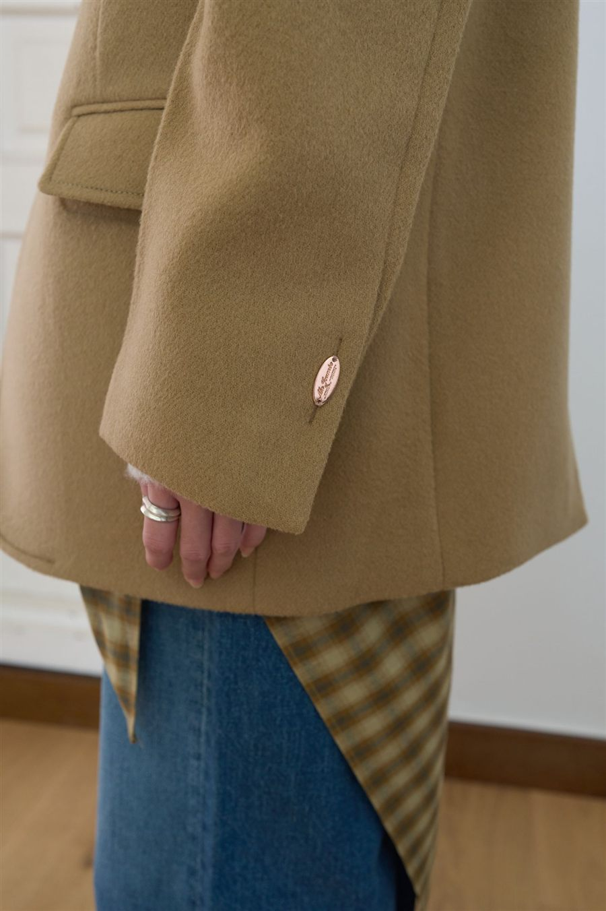

겨울 캐주얼 · 29CM · 2026.11.10 판매가
겨울 캐주얼, 카멜 하프코트부터
데님, 니트, 부츠에 툭 걸치는 겨울 캐주얼 아우터를 모아 두는 페이지예요. 첫 아이템은 마조네 캐시미어 더블 하프코트예요. 노란기가 덜한 카멜 베이지라 봄웜톤에 잘 받아요.




마조네 상품 사진 · 와이드 데님 / 미니스커트 + 롱부츠 / 제품 앞면 / 소매 디테일
마조네 MA JOURNÉE
CASHMERE DOUBLE HALF COAT_BEIGE
현재 S·M 모두 품절후기 241개찜 1.1만여성 · 하프코트
정가389,000원
판매가23%300,100원
쿠폰 적용가31%267,830원
무신사 삼성카드 결제 시229,830원
| 치수(cm) | S | M |
|---|---|---|
| 총장 | 75 | 76 |
| 어깨 | 49 | 50 |
| 가슴단면 | 49.5 | 51.5 |
| 소매기장 | 59 | 60 |
| 암홀 | 24 | 25.5 |
S 추천. 어깨 49cm는 어깨선이 내려오는 오버핏이에요(네이비 블레이저 S는 42.5cm). 소재는 캐시미어 5% · 울 95%, 드라이클리닝.
29CM에서 보기 · 재입고 알림 ↗후기 요약
사이즈
- 155~163cm 대부분 S. "단정하니 딱 좋다"(169cm·66 → S)
- 오버핏이라 소매가 길다는 후기가 많아요. 접으면 브라운 안감이 보여 예뻐요
- 얇은 이너면 모델 같은 오버핏, 두꺼운 니트면 노멀한 핏
색·소재
- "노란기가 덜한 카멜 베이지"라 얼굴이 칙칙해 보이지 않는다는 평
- 봄라이트톤 한 분은 "찰떡은 아니다"고 했어요. 봄웜 중에서도 쨍한 톤보다 차분한 톤에 더 잘 맞아요
- 원단이 힘 있고 너무 무겁지 않아요(살짝 무겁다는 의견도 있음)
아쉬운 점
- 한겨울엔 얇아서 가을~초겨울용이라는 후기
- 실밥·마감, 주머니 쪽 색 바램 불량 후기가 몇 개 있어요. 받으면 바로 검수하세요
- 금장 버클은 디자인상 왼쪽에만 있어요(불량 아님)
겨울 캐주얼 코디 공식
① 와이드 데님 + 레이어드 스커트
모델 착장 그대로. 미드 블루 와이드 데님 위에 체크 랩 스커트를 겹치고, 아이보리 니트에 코트를 걸쳐요.
② 미니스커트 + 블랙 롱부츠
하프 기장이라 스커트를 살짝 덮어 다리가 길어 보여요. 브라운 숄더백으로 톤을 맞추세요.
③ 크림 터틀넥 + 차콜 슬랙스
마조네 차콜 부츠컷 팬츠와 같은 브랜드라 실루엣이 잘 맞아요. 셋업 바지를 겨울 캐주얼로 돌려 입는 방법.
④ 브라운 니트 + 진청 스트레이트
카멜 + 브라운 톤온톤. 봄웜톤에게 가장 안전한 겨울 조합이에요. 이너는 이너 룩북 참고.
가격과 재고는 2026.11.10 29CM 기준이에요. 품절 상품은 상품 페이지에서 재입고 알림을 신청할 수 있어요.